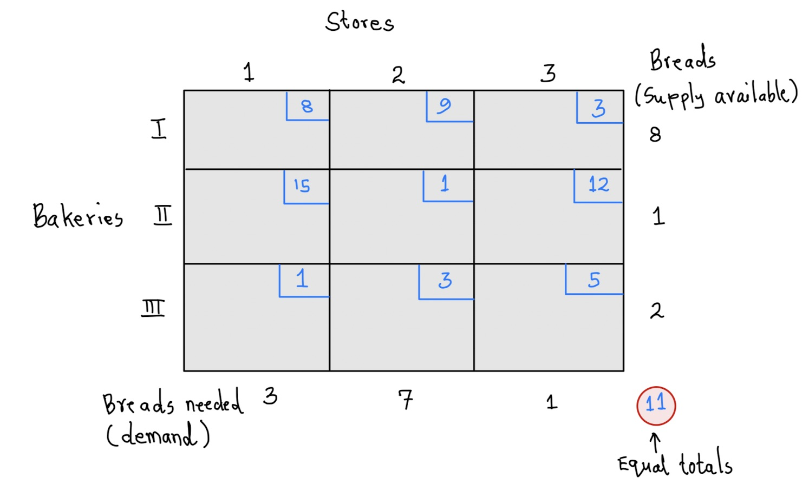

7 The Transportation Problem
7.1 Introduction
Consider the following scenarios:
Scenario 1: After a long weekend holiday in your city, a scooter company has extra scooters in some part of the city and too few in others. The company is faced with the problem of reshuffling the scooters at a minimal cost so that each part of the city has the right number for their clients.
Scenario 2: A college has many campuses in a given state and materials (such as books) are often shared among the campuses. Because the calendars for each campus differs slightly, there are more resources in some campuses than others at some given point. The college needs to transport the resources between campuses to ensure student needs at each campus are met while keeping the transportation cost as low as possible.
Scenario 3: A huge car manufacturer has three manufacturing plants and several sales outlets at various locations in the country. Each outlet needs a specific number of cars. The cost of transporting the cars from different plants to different sales outlets is known. How should the company transport the cars while inuring minimum cost?
Definitions
Problems of the kind given in the three scenarios above are called Transportation problems. Companies often face such kind of problems on a day to day basis. Transportation problems (TPs) are a special type of linear programming problems where the goal is to minimize cost of transporting goods/services from a number of sources/origins (such as manufacturing plants) to a number of destinations/outlets (such as stores).
Supply: This refers to the maximum number of products that can be shipped from the sources. Different sources may supply different amounts of a product.
Demand: this refers to the minimum number of products that the destinations/outlets require. Again, different outlet often have different demands.
Rim conditions: We use the term rim conditions to refer to this situation where a specific number can be supplied from different sources and a specific number is required at different destinations. The rim conditions are satisfied when all units that can be supplied have been supplied and all demand requirements for each outlet have been met.
TP Tableau: A transportation problem tableau is a table showing the sources, supply quantities for each source, destinations, demands for each destination, and the costs for shipping between each source and destination. The more units you ship the higher the cost.
Feasible solution: A solution for a transportation problem that does not violate the rim conditions. In other words, all units are supplied out and all stores’ demands are met.
Optimal Solution: A feasible solution that guarantees the minimum cost of transportation.
We will solve problems for which the rim conditions are satisfied. There are methods for solving conditions where the rim conditions are not satisfied but those are beyond the scope of the course.
Example 1 (Adopted from COMAP, 10th edition)
Imagine that we have three bakeries (I, II, and III) and three stores (1, 2, and 3), though the ideas that we develop will solve problems where the number of of stores and bakeries are not the same. The three stores require 3 dozen, 7 doze, and 1 dozen loaves of bread, respectively, while the three bakeries can supply 8 dozen, 1 dozen, and 2 dozen loaves, respectively. The shipping costs from bakery I to store 1, 2, and 3 are $8, $9, and $3 respectively. The the shipping costs from bakery II to stores 1, 2, and 3 are $15, $1, and $12 respectively. Finally, the shipping cost from bakery III to stores 1, 2, and 3 are $1, $3, and $5 respectively.
- Create a tableau to show the costs and rim conditions for the problem.
- Find a feasible solution (shipment plan) for this transportation cost. Is this solution optimal?
Solution
Below is the tableau showing the rims conditions and the costs.  The supply available is shown on the right side (8,1, and 2) while the demand is shown on the bottom side (3, 7, and 1) of the tableau. The supply adds up to 11 and so does the demand. Thus, the rim conditions are satisfied.
Each square on the tableau is called a cell and it shows the transportation cost. For example, the transportation cost from bakery I to store 2 is 9 units. We reference this cell as \((I,2)\). Similarly, in cell \((III,2)\) we see that the cost of transporting a dozen of bread from bakery III to store 2 is 5 units.Before you learn about an algorithm that guarantees an optimal solution, let us look at one possible solution (feasible solution). Take a look at the tableau below:
Here are important things to note about this new tablea:
We have new numbers (circled) added in different cells of the tableau. These numbers show the amount that we plan to ship. For example, the circled 6 in cell \((I,2)\) means we plan to ship 6 units from bakery I to store 2.
When you add the circled numbers across rows, you get the number of supply for that bakery For example, the sum of the numbers in row 1 (bakery I) is \(2+6=8\) which equals the supply that can come from store I.
When you add the circled numbers along columns, you get the number demanded by that store. For example, the sum of the circled numbers in column 3 is \(6+1=7\) which equals the demand for store 2.
There are only 5 circled numbers and the table has 3 columns and 3 rows for a total of - This will always be true for any feasible solution.
Any feasible solution for a tableau with m rows and n columns will ship through (m+n)-1 cells.
Thus, the above shipment plan is feasible. The cost associated with the plan is \[\begin{align} Shipment \hspace{.05in}Cost&= 2(8)+6(9)+1(15)+1(3)+1(5)\\ &=16+54+15+3+5\\ &=93 \end{align}\]
In case you are wondering how we came up with the above shipment plan, it means you are paying close attention. That is a good thing. The next section presents a method know as Northwest corner rule that we can use to find a feasible solution. the method does not use the associated costs and so may not guarantee an optimal solution.
7.2 The Northwest Corner Rule
The northwest corner rule (NWCR) leverages the geometry of the table to identify a feasible shipment plan. It works by reducing the initial tableau step by step until one cell remains. Below are the steps of the rule:
- On the initial tableau, locate the cell that is as far to the top and to the left as possible (northwest). Ship via this cell the smaller of the two rim values (call this \(s\)) associated with the row and column of the cell. Put a circled entry (the \(s\)) in this cell to indicate that it is in use.
- Cross out the column or row that had the value \(s\) and reduce the other rim value by \(s\).
- When a single cell remains, there will be a tie for the rim conditions of both the row and the column involved, and this amount is entered into the cell and circled.
Example 2
Use the northwest corner rule to find a feasible solution for the tableau in example 1 above.
Solution
First, recall that the NWCR ignores the costs. So, we first rewrite the tableau without the costs. We have also removed the tableau labels for simplicity,
Here is an explanation of every step:
Step 1: Locate the northwest corner cell on the initial tableau and ship 3 units through it. We choose 3 because it is the less of 3 and 8. We erase column 1 and reduce the 8 by 3.
Step 2: For our new tableau (without column 1), we ship 5 units through the northwest cell. Delete the row and subtract 5 from 7 to get 2.
Step 3: Ship one unit through the cell shown and subtract the 1 from 2. Delete the row.
step 4: Ship 1 unit through the northwest cell and erase the column. Reduce the row value by 1 to get 1. Now you are left with only one cell through which you ship 1 unit. You are done!
step 5: Rebuild the tables with the shipments above.
Observe that there are exactly 5 cells through which we are shipping. This is one less than 6, which is the total number of rows and columns.
The cost of this new shipment plan is,
\[\begin{align} Shipment \hspace{.05in}Cost&= 3(8)+5(9)+1(1)+1(3)+1(5)\\ &=24+45+1+3+5\\ &=78 \end{align}\]Notice that this cost is smaller than what we had earlier (93). The question that still remains is,
Is this the cheapest solution? How can we be absolutely sure about this?
It turns out that this is still not the cheapest. There is an algorithm called the Stepping Stone Method that will guarantee an optimal solution (i.e., the cheapest shipment plan).
7.3 The Stepping Stone Method
Before we look at the stepping stone method, we define the term indicator value.
Definition:
The indicator values of a cell, \(C\) not currently circled is the cost change associated with increasing or decreasing the amounts shipped in a circuit of cells starting at cell \(C\). It is computed by summing with alternating signs the cost of the cells in the circuit.
Example 3
Since our ultimate goal is to improve the solution in the previous example, we are going to use the final tableau earlier (left side of figure below) to compute the indicator value. Suppose we want the indicator value for cell \((I, 3)\). Notice that this cell is currently not circled.
Notice that the circuit has alternating \(+\) and \(-\) signs. We can ship \(1\) unit through cell \((I,3)\) and then reduce the amount being shipped in cell \((III,3)\) by \(1\). This means we reduce the amount in cell \((I,2)\) by \(1\) and then increase the amount being shipped in cell \((III,2)\) by \(1\) unit. Doing this does not affect the rim conditions (look at the new tableau).
By using this alternative tableau, we get a cost of \(70\). See below:
\[\begin{align} Shipment \hspace{.05in}Cost&= 3(8)+4(9)+1(1)+2(3)+1(3)\\ &=24+36+1+6+3\\ &=70 \end{align}\]The difference in cost between this new tableau and the original one is \(-8\). Thus, the indicator value of this cell is \(-8\).
Alternatively, we can compute the indicator values directly from the circuit as follows:
\[\begin{align} Indicator \hspace{.05in}Value&= 1(3)-1(9)+1(3)-1(5)\\ &=3-9+3-5\\ &=-8 \end{align}\]We use 1 unit for each cell cost because that is the amount we are moving around thr circuit.
Some things to Note;
- Example 3 above shows that by moving things around via the indicator value, we can save on the transportation cost.
- The maximum amount you can move around is capped on the amount that can be shipped via a given cell. In our example above, we moved only 1 because that is the maximum that can be shipped via cell \((I,3)\). If you move 2 for example, you will violate the rim conditions.
- The indicator value of a cell tells you the amount by which the cost decreases or increases if you ship via that cell.
- You start with an empty cell but all the other three cells in the circuit must have some shipment already.
- In some cases, we can ship 0 quantities through a cell.
Now, we need to compute the indicator values for the rest of the cells.
Indicator value computation for cell \((II,3)\) is shown below:
\[\begin{align} Indicator \hspace{.05in}Value&= 1(12)-1(1)+1(3)-1(5)\\ &=12-1+3-5\\ &=+9 \end{align}\]The positive indicator value means that shipping through that cell adds the cost. So, this does not help.
Notice that the indicator values for the other two cells based on our initial tableau are also positive. So, our best tableau at the moment is the second figure in example 3 above. We ask ourselves, can we improve this tableau any further? It turns out that the only cell with negative indicator value based this new tableau is \((III, 1)\). See figure below:
Notice that we moved 2 units around this time.
With this new tableau, all the empty cells have positive indicator values and so we cannot improve any further. We now have an optimal shipping plan. The cost of the plan is
\[\begin{align} Shipment \hspace{.05in}Cost&= 1(8)+6(9)+1(3)+1(1)+2(1)\\ &=8+54+3+1+2\\ &=68 \end{align}\]The above process is called the stepping stone method. You check indicator values at every step until all cells have positive indicators values, which means the solution cannot be improved any further.
Example 4 (Adopted from For All Practical Purposes, 10th Edition)
Two dairies supply three supermarket chains with the demands for sour cream as shown in the tableau below. Also indicated in the cells is the cost of shipping between pairs of sites.

a) Use the Northwest Corner Rule to obtain a feasible solution, and compute the cost of this feasible solution.
b) If the feasible solution in part (a) is not optimal, find an optimal solution.
Solution
Applying the northwest corner rule, we get the following tableau: 
a) Note that the rim conditions are satisfied. The solution for this shipping plan would be \[\begin{align} Cost&=2(6)+3(9)+2(3)+4(5)\\ &= 12+27+6+20\\ &=65 \end{align}\]
b) To determine whether the solution in (a) is optimal, we compute the indicator values for each of the empty cells:
For cell \((II,1)\),
\[\begin{align} Indicator \hspace{.05in}Value &=+1-6+3-5\\ &=-7 \end{align}\]For cell \((II,2)\),
\[\begin{align} Indicator \hspace{.05in}Value &=+7-5+3-9\\ &=-4 \end{align}\]The negative indicator values mean that the solution we have is not optimal. We can improve it.
Let us ship via \((II,1)\). The new tableau for this plan is,
And the associated cost is,
\[\begin{align} Shipment \hspace{.05in}Cost &=2(1)+2(5)+5(3)+3(9)\\ &=51 \end{align}\]Although this is an improved solution, the indicator value for cell \((II,2)\) is negative \((7-5+3-9=-4)\), which means we can do better.
Let us improve this by shipping via cell \((II,2)\). The new tableau becomes,
Notice that with this new tableau, all empty cells have positive indicator values. Hence, this is the best shipment plan that we can get and thus is the optimal solution.
The cost associated with this plan is,
\[\begin{align} Shipment \hspace{.05in}Cost &=2(1)+2(7)+6(3)+1(9)\\ &=43 \end{align}\]7.4 Exercises
- For each of the following tableaux, create a possible real-world setting for the problem.
Use the northwest corner rule to find a feasible solution for each tableau in problem 1 above. Note that the solution need not be optimal.
The following tableau represents the shipping costs and supply-and-demand constraints for supplies of oranges to juice manufacturing companies.
- Using the northwest corner rule, find the initial solution.
- Calculate the indicator value for each non-circled cell.
- Is the current solution optimal?
- If your answer to part (c) above is “NO”, find an optimal solution.
- Using the northwest corner rule, find the initial solution.
The following tableau shows the cost of returning cars from cities that have more cars than necessary to cities that have too few cars.
- Find an initial shipment plan
- Compute the cost of the plan in (a) above.
- Determine if the solution found in (b) is optimal. If the solution is not optimal, find an optimal solution.
- Find an initial shipment plan
Consider the tableau below
- Apply the northwest corner rule to the following tableau
- Find the cost associated with the solution in (a) above.
- Compute the indicator value for each non circled cell.
- Is the solution found in part (b) optimal? If not, find an optimal solution.
- Apply the northwest corner rule to the following tableau